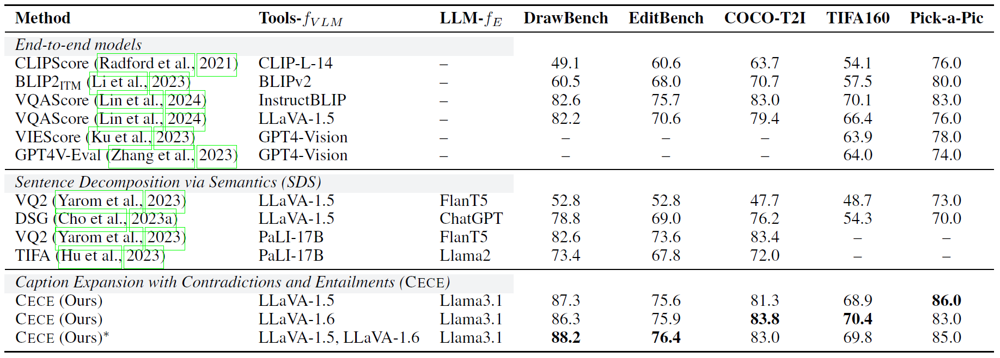

Natural Language Inference Improves
Compositionality in Vision-Language Models
Paola Cascante-Bonilla1,2, Yu Hou1, Yang Trista Cao3, Hal Daumé III1, Rachel Rudinger1
1University of Maryland, College Park, 3Stony Brook University, 2University of Texas at Austin
Abstract
Compositional reasoning in Vision-Language Models (VLMs) remains challenging as these models often struggle to relate objects, attributes, and spatial relationships. Recent methods aim to address these limitations by relying on the semantics of the textual description, using Large Language Models (LLMs) to break them down into subsets of questions and answers. However, these methods primarily operate on the surface level, failing to incorporate deeper lexical understanding while introducing incorrect assumptions generated by the LLM. In response to these issues, we present Caption Expansion with Contradictions and Entailments (Cece), a principled approach that leverages Natural Language Inference (NLI) to generate entailments and contradictions from a given premise. Cece produces lexically diverse sentences while maintaining their core meaning. Through extensive experiments, we show that Cece enhances interpretability and reduces overreliance on biased or superficial features. By balancing Cece along the original premise, we achieve significant improvements over previous methods without requiring additional fine-tuning, producing state-of-the-art results on benchmarks that score agreement with human judgments for image-text alignment, and achieving an increase in performance on Winoground of +19.2% (group score) and +12.9% on EqBen (group score) over the best prior work (finetuned with targeted data).
Overview
Caption Expansion with Contradictions and Entailments (Cece) leverages Natural Language Inference (NLI) to improve
the compositional capabilities of VLMs.
We instruct an LLM to generate entailments
(hypotheses that logically follow from the premise) and
contradictions (hypotheses that are logically incompatible with the premise).
A VLM is then used to compute the likelihood of the captions
generated via entailments and contradictions. The scores are finally balanced along with the original
image-text results to avoid semantic drift and enable better alignment.

Results
We evaluate our approach on two compositional benchmarks: Winoground and EqBen. These are remarkably hard due to multi-hop evaluation that includes understanding the semantics of the images and text after altering their objects, attributes, and relationships. These results highlight the performance of our method without finetuning.
We also evaluate our approach on benchmarks that score agreement with human judgments of alignment for image-text alignment.

For more details, check out our paper!